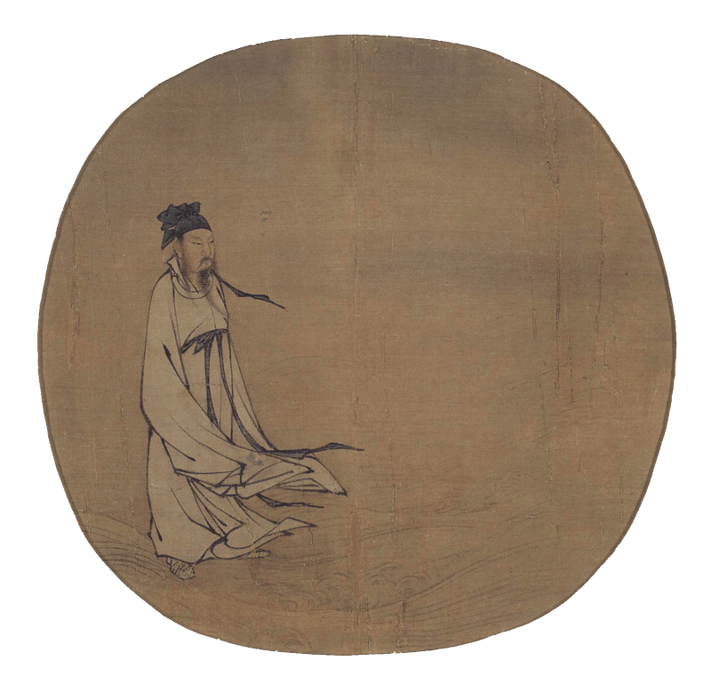

Oracle Casting
Reflect on a question to ask the Yi Jing, type it in the Question Box below, and hit the submit button. A basic FAQ is available below for a quick introduction to the Yi Jing.
This site includes several interpretations, some interpretations may be incomplete. Hexagram JSON data credit goes to: link.
 Start~ FAQ ~
What is the Yi Jing?
The Yi Jing, a.k.a. I Ching or literal english translation, The Book of Changes, is one of the oldest oracles known, originiating in Ancient China.
What can I expect from a cast?
The quality of an answer will depend on the quality of your question. The Yi Jing is not a fortune teller, nor will it give you a straight 'yes' or 'no' answer. The Yi Jing is best used to understand a situation, relationship, or decision from a different perspective from the moment you ask the question. This is meant to enhance your overall view of the situation, the Yi Jing will not make a decision for you. Expect to take a deep introspective and objective look at your idea(s) about the situation.
How do I read the Yi Jing?
The Yi Jing is composed from the bottom line (first line) to the top line (sixth line). A coin is thrown three times to cast a single line (or three coins cast at once). Each side of the coin represents either 'Yin' or 'Yang'. The way the Yi Jing 'finds' advice is through relating the balance of your casting to how Daoists percieve ultimate harmony. Too much 'Yin' or 'Yang' in a given line will show that it's not in harmony with its opposite aspect, requiring equilization (change).
After 6 lines have been cast, the initial hexagram is complete. The lines that need 'changing' will each have their own significance and contribution to your overall guidance. The resulting new hexagram will illustrate the transformation of the initial perspective held.
If a casting has no changing lines, it's called an 'unchanging' hexagram. The 'Judgement' part of the hexagram interpretation will relay your answer.